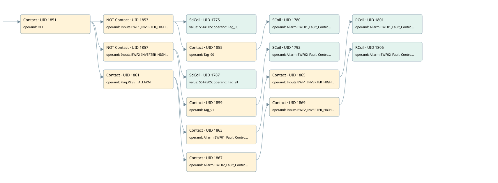

bwf01/bwf02
allarms 1 · 검색 색인 순서 40 · 원본 내부 NID 추정 47
백업 PLF 원본의 3071877 바이트 위치에서 복원한 XML. 검색 문서 1820의 객체 키 161022007a62000000000000와 연결했다. 이름 해석 18/18개. 남은 RefId는 상수 또는 미해석 참조다.
연결 구조 다시 그리기
원본 Part/PCon/Wire를 이용한 연결도다. TIA 화면의 래더 배치 또는 실행 결과를 재현한 그림은 아니다. 핀 연결은 아래 표와 원본 XML을 기준으로 읽는다. 노드 위에 마우스를 두면 피연산자 이름을 볼 수 있다.

접점·코일·블록과 피연산자
| Part UID | Gate | Negated 핀 | 연결 피연산자 |
|---|---|---|---|
| 1851 | Contact | operand = OFF | |
| 1853 | Contact | operand | operand = Inputs.BWF1_INVERTER_HIGH_SPEED |
| 1775 | SdCoil | value = S5T#30S; operand = Tag_90 | |
| 1855 | Contact | operand = Tag_90 | |
| 1780 | SCoil | operand = Allarm.BWF01_Fault_Control | |
| 1857 | Contact | operand | operand = Inputs.BWF2_INVERTER_HIGH_SPEED |
| 1787 | SdCoil | value = S5T#30S; operand = Tag_91 | |
| 1859 | Contact | operand = Tag_91 | |
| 1792 | SCoil | operand = Allarm.BWF02_Fault_Control | |
| 1861 | Contact | operand = Flag.RESET_ALLARM | |
| 1863 | Contact | operand = Allarm.BWF01_Fault_Control | |
| 1865 | Contact | operand = Inputs.BWF1_INVERTER_HIGH_SPEED | |
| 1801 | RCoil | operand = Allarm.BWF01_Fault_Control | |
| 1867 | Contact | operand = Allarm.BWF02_Fault_Control | |
| 1869 | Contact | operand = Inputs.BWF2_INVERTER_HIGH_SPEED | |
| 1806 | RCoil | operand = Allarm.BWF02_Fault_Control |
접점 경로를 펼친 조건식
Contact·O/A·비교기의 원본 연결을 읽기 쉽게 펼친 보조 해석이다. POWER는 전원 레일 시작을 뜻한다. 호출 블록·에지·타이머의 내부 동작과 다중 쓰기 순서는 이 표로 실행 검증하지 않았다. 미해석 핀과 RefId는 원문 연결표에서 확인한다.
| UID | 동작 | 대상 | 원본 접점 경로 | 내용 |
|---|---|---|---|---|
| 1775 | SdCoil | Tag_90 | (OFF AND NOT [Inputs.BWF1_INVERTER_HIGH_SPEED]) | 시간 동작 SdCoil; 타이머 의미 추가 확인 / 시간 인자 S5T#30S |
| 1780 | SCoil | Allarm.BWF01_Fault_Control | ((OFF AND NOT [Inputs.BWF1_INVERTER_HIGH_SPEED]) AND Tag_90) | 조건 성립 시 Set |
| 1787 | SdCoil | Tag_91 | (OFF AND NOT [Inputs.BWF2_INVERTER_HIGH_SPEED]) | 시간 동작 SdCoil; 타이머 의미 추가 확인 / 시간 인자 S5T#30S |
| 1792 | SCoil | Allarm.BWF02_Fault_Control | ((OFF AND NOT [Inputs.BWF2_INVERTER_HIGH_SPEED]) AND Tag_91) | 조건 성립 시 Set |
| 1801 | RCoil | Allarm.BWF01_Fault_Control | (((OFF AND Flag.RESET_ALLARM) AND Allarm.BWF01_Fault_Control) AND Inputs.BWF1_INVERTER_HIGH_SPEED) | 조건 성립 시 Reset |
| 1806 | RCoil | Allarm.BWF02_Fault_Control | (((OFF AND Flag.RESET_ALLARM) AND Allarm.BWF02_Fault_Control) AND Inputs.BWF2_INVERTER_HIGH_SPEED) | 조건 성립 시 Reset |
원본 배선 연결
| Wire UID | 동일 Wire 연결 끝점 |
|---|---|
| 1871 | Powerrail {} ↔ Part 1851.in |
| 1825 | ORef 1807 (OFF) ↔ Part 1851.operand |
| 1852 | Part 1851.out ↔ Part 1853.in ↔ Part 1857.in ↔ Part 1861.in |
| 1826 | ORef 1808 (Inputs.BWF1_INVERTER_HIGH_SPEED) ↔ Part 1853.operand |
| 1854 | Part 1853.out ↔ Part 1775.in ↔ Part 1855.in |
| 1827 | ORef 1809 (S5T#30S) ↔ Part 1775.value |
| 1828 | ORef 1810 (Tag_90) ↔ Part 1775.operand |
| 1829 | ORef 1811 (Tag_90) ↔ Part 1855.operand |
| 1856 | Part 1855.out ↔ Part 1780.in |
| 1831 | ORef 1812 (Allarm.BWF01_Fault_Control) ↔ Part 1780.operand |
| 1833 | ORef 1813 (Inputs.BWF2_INVERTER_HIGH_SPEED) ↔ Part 1857.operand |
| 1858 | Part 1857.out ↔ Part 1787.in ↔ Part 1859.in |
| 1834 | ORef 1814 (S5T#30S) ↔ Part 1787.value |
| 1835 | ORef 1815 (Tag_91) ↔ Part 1787.operand |
| 1836 | ORef 1816 (Tag_91) ↔ Part 1859.operand |
| 1860 | Part 1859.out ↔ Part 1792.in |
| 1838 | ORef 1817 (Allarm.BWF02_Fault_Control) ↔ Part 1792.operand |
| 1840 | ORef 1818 (Flag.RESET_ALLARM) ↔ Part 1861.operand |
| 1862 | Part 1861.out ↔ Part 1863.in ↔ Part 1867.in |
| 1841 | ORef 1819 (Allarm.BWF01_Fault_Control) ↔ Part 1863.operand |
| 1864 | Part 1863.out ↔ Part 1865.in |
| 1842 | ORef 1820 (Inputs.BWF1_INVERTER_HIGH_SPEED) ↔ Part 1865.operand |
| 1866 | Part 1865.out ↔ Part 1801.in |
| 1844 | ORef 1821 (Allarm.BWF01_Fault_Control) ↔ Part 1801.operand |
| 1845 | ORef 1822 (Allarm.BWF02_Fault_Control) ↔ Part 1867.operand |
| 1868 | Part 1867.out ↔ Part 1869.in |
| 1846 | ORef 1823 (Inputs.BWF2_INVERTER_HIGH_SPEED) ↔ Part 1869.operand |
| 1870 | Part 1869.out ↔ Part 1806.in |
| 1848 | ORef 1824 (Allarm.BWF02_Fault_Control) ↔ Part 1806.operand |
식별자 해석 근거 18개
| ORef UID | RefId | 이름 | IdentXmlPart 파일 | 해석 방법 |
|---|---|---|---|---|
| 1807 | 46 | OFF | 0658-IdentXmlPart.xml | UID/RID + search-text + NID agreement |
| 1808 | 305 | Inputs.BWF1_INVERTER_HIGH_SPEED | 0657-IdentXmlPart.xml | UID/RID + search-text + NID agreement |
| 1810 | 198 | Tag_90 | 0658-IdentXmlPart.xml | UID/RID + search-text + NID agreement |
| 1809 | 197 | S5T#30S | 0656-IdentXmlPart.xml | literal candidate: UID/RID/NID + nearby named declarations + search-text agreement |
| 1811 | 198 | Tag_90 | 0658-IdentXmlPart.xml | UID/RID + search-text + NID agreement |
| 1812 | 199 | Allarm.BWF01_Fault_Control | 0657-IdentXmlPart.xml | UID/RID + search-text + NID agreement |
| 1813 | 306 | Inputs.BWF2_INVERTER_HIGH_SPEED | 0657-IdentXmlPart.xml | UID/RID + search-text + NID agreement |
| 1815 | 201 | Tag_91 | 0658-IdentXmlPart.xml | UID/RID + search-text + NID agreement |
| 1814 | 197 | S5T#30S | 0656-IdentXmlPart.xml | literal candidate: UID/RID/NID + nearby named declarations + search-text agreement |
| 1816 | 201 | Tag_91 | 0658-IdentXmlPart.xml | UID/RID + search-text + NID agreement |
| 1817 | 202 | Allarm.BWF02_Fault_Control | 0657-IdentXmlPart.xml | UID/RID + search-text + NID agreement |
| 1818 | 13 | Flag.RESET_ALLARM | 0657-IdentXmlPart.xml | UID/RID + search-text + NID agreement |
| 1819 | 199 | Allarm.BWF01_Fault_Control | 0657-IdentXmlPart.xml | UID/RID + search-text + NID agreement |
| 1820 | 305 | Inputs.BWF1_INVERTER_HIGH_SPEED | 0657-IdentXmlPart.xml | UID/RID + search-text + NID agreement |
| 1821 | 199 | Allarm.BWF01_Fault_Control | 0657-IdentXmlPart.xml | UID/RID + search-text + NID agreement |
| 1822 | 202 | Allarm.BWF02_Fault_Control | 0657-IdentXmlPart.xml | UID/RID + search-text + NID agreement |
| 1823 | 306 | Inputs.BWF2_INVERTER_HIGH_SPEED | 0657-IdentXmlPart.xml | UID/RID + search-text + NID agreement |
| 1824 | 202 | Allarm.BWF02_Fault_Control | 0657-IdentXmlPart.xml | UID/RID + search-text + NID agreement |
검색 코드 보조 자료
참조 명칭을 찾기 위한 자료이며 실행 순서나 AND/OR 관계는 위 연결표로 확인한다.
"off" "inputs".bwf1_inverter_high_speed "tag_90" s5t#30s "inputs".bwf2_inverter_high_speed "tag_91" s5t#30s "tag_91" "allarm".bwf02_fault_control "flag".reset_allarm "allarm".bwf01_fault_control "inputs".bwf1_inverter_high_speed "allarm".bwf01_fault_control "allarm".bwf02_fault_control "inputs".bwf2_inverter_high_speed "allarm".bwf02_fault_control "tag_90" "allarm".bwf01_fault_control